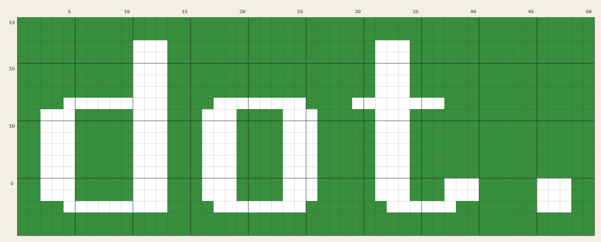

가이드 › 뜨는 방향에 따라 달라지는 모양
같은 도안, 뜨는 방향에 따라 달라지는 모양
50코 × 19단짜리 "dot." 도안을 가로로 한 번, 세로로 한 번 떠 봤습니다. 같은 도안으로 같은 짧은뜨기를 해도 어느 방향으로 뜨느냐에 따라 편물 느낌이 달라진다는 건 알고 있었는데, 실제로 떠서 비교해 보니 꽤 차이가 크네요. 코바늘을 시작한 지 얼마 안 돼서 손땀이 고르지 못한 점은 양해 부탁드려요.
- 실: 초록색은 청송뜨개실의 아이러브얀, 흰색은 얀월드의 착한면
- 코바늘: 튤립 에티모 모사용 6호
- 완성 크기: 가로 시작 25.5 × 9cm, 세로 시작 23 × 9.4cm

두 작품을 나란히 놓으면 차이가 한눈에 보입니다.

세로 시작이 초보자에게는 편했어요
세로로 뜨는 편이 초보자 입장에서는 훨씬 편했습니다. 가로로 뜨면 아무래도 시작 사슬 자체가 길어지면서 편물이 조금 고르지 못하게 되는 느낌이 있었는데, 세로로 뜨니 그런 게 없어서 모양이 안정적이었어요. 하지만 두 편물의 글자 모양과 크기가 꽤 달라졌기 때문에, 취향에 따라 고르시면 좋을 것 같아요.

글자 획이 한 줄 두께면 가로로 뜨는 게 자연스러웠어요
제 도안 "dot."처럼 글자 획이 한 줄(1단) 두께로 되어 있는 부분이 있다면, 가로로 뜨는 쪽이 글자가 더 자연스럽고 보기 좋았습니다. 반대로 글꼴을 바꿔서 모든 알파벳의 획이 두 줄(2단) 두께로 처리되는 도안이라면, 덜 늘어나는 세로 쪽이 편할 것 같아요.

정리
- 글자 획이 한 줄 두께인 부분이 있는 도안: 가로로 뜨는 쪽이 글자가 자연스럽고 보기 좋았어요.
- 모든 획이 두 줄 두께 이상인 도안: 덜 늘어나는 세로 쪽이 편할 것 같아요.
- 방향을 바꿔서 뜰 때는 도안 만들기 화면의 더보기 메뉴에서 90° 또는 270°로 돌리면 됩니다.